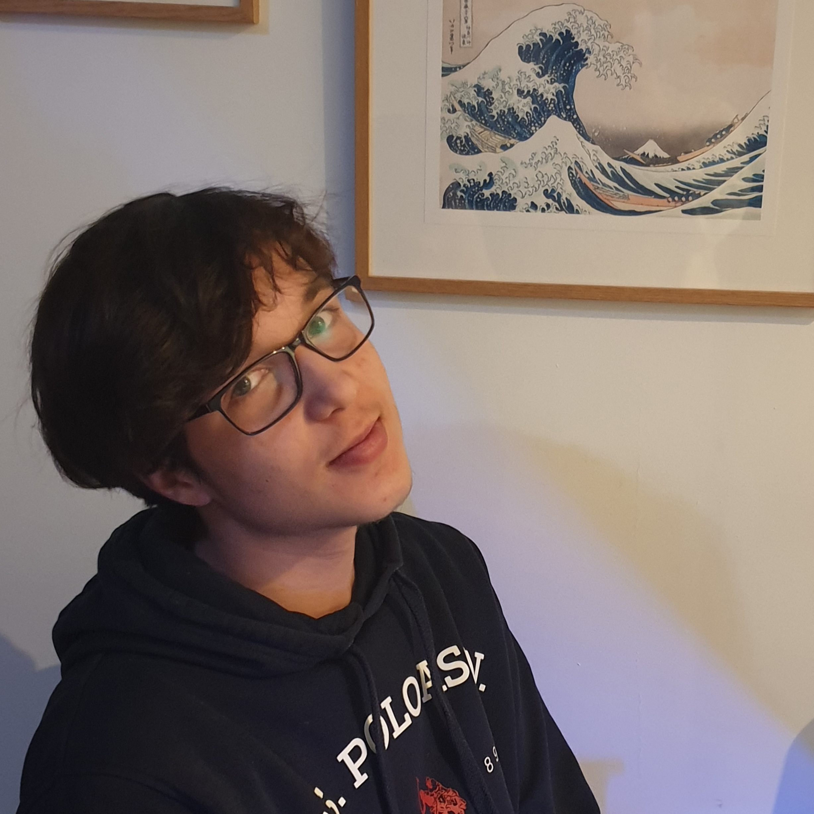

Stanisław Dębicki

Antoni Sabat
O nas
Hi, we are students of the Communications Technical School in Cracow. This page was created as part of a school project about famous Poles. What you can see now was created by us (see top). Enjoy scrolling :).